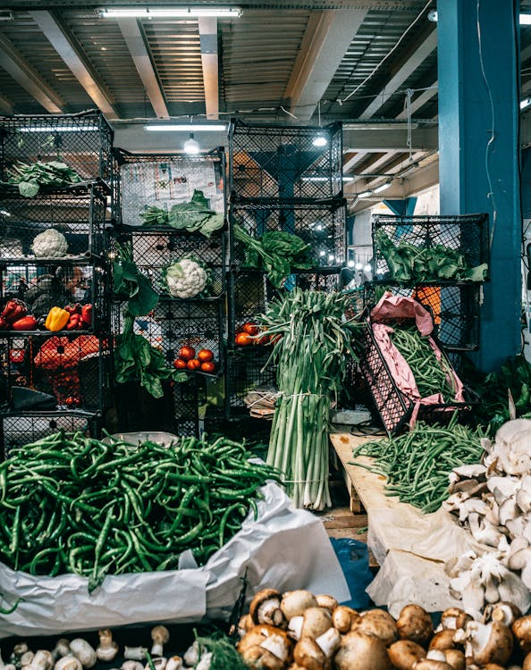
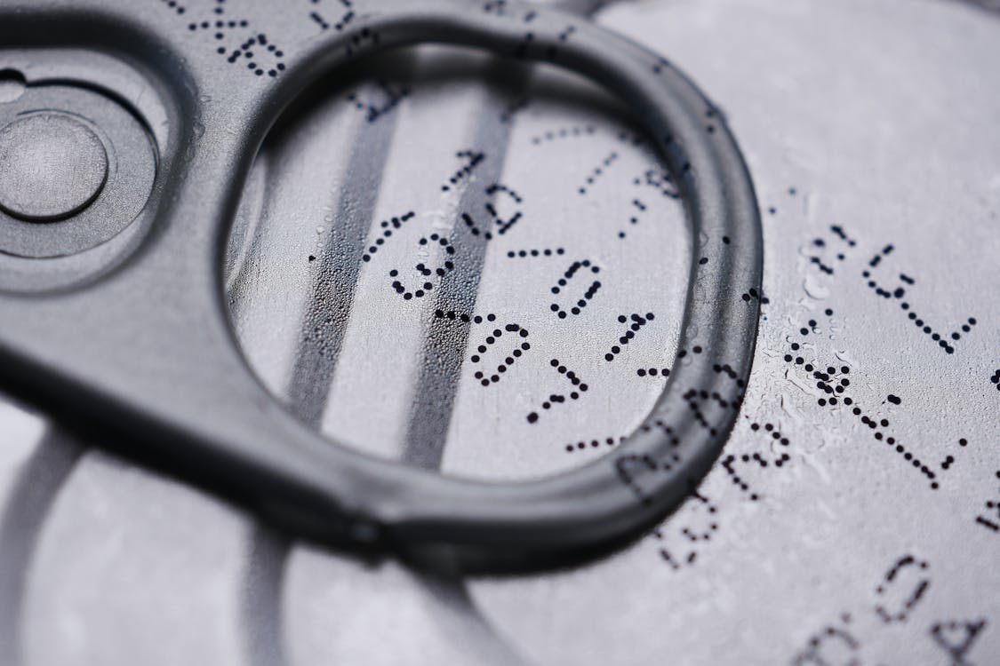
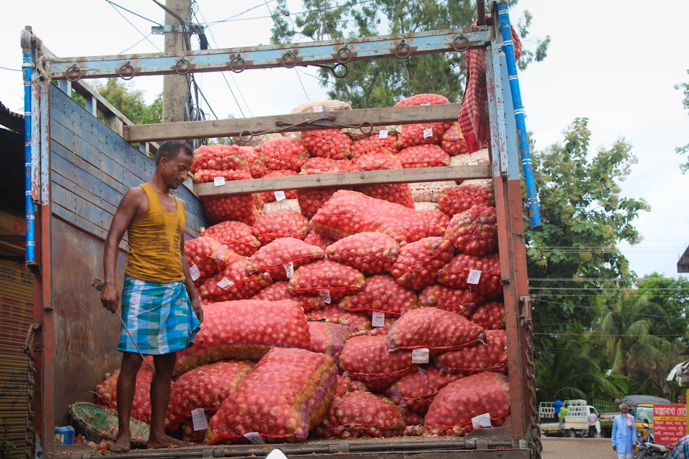

Causes of Food Waste
Food waste occurs at various stages of the supply chain, from production to consumption. Here are some of the main causes:
Poor Storage and Handling
Improper storage and handling practices lead to food spoilage. Inadequate refrigeration and improper packaging can cause food to deteriorate, especially in warmer climates and lower-income regions where storage infrastructure is lacking.
Overproduction and Surplus

Farmers and manufacturers often produce more food than the market demands to ensure supply. This surplus food, if unsold, can end up being discarded. Additionally, many restaurants and retailers throw away perfectly good food to maintain stock freshness.
Expiration and Mislabeling
Expiration dates on food packaging can be confusing for consumers, leading them to discard food that is still safe to eat. Mislabeling and lack of understanding about "best before" and "use by" dates contribute to unnecessary waste.
Consumer Behavior

Consumer habits, such as buying in bulk, over-preparing, and a lack of meal planning, contribute significantly to food waste. Many people throw away food because of changes in taste, lack of awareness about storage, or simply out of convenience.
Inefficient Supply Chains
In lower-income countries, food waste often results from inefficient supply chains, including lack of transportation, inadequate storage facilities, and poor infrastructure. These issues lead to food loss before it even reaches consumers.
Understanding the causes of food waste helps us identify areas where improvements can be made. By addressing these root causes, we can work towards a more sustainable food system.